Introduction
이 자료에 대하여
공공디자인은 결과물만으로 완성되지 않습니다. 벤치 하나를 놓을 때도 누구와 이야기하고, 누가 결정하고, 누가 돌볼지를 함께 정해야 합니다. 이 자료는 그 ‘함께 정하는 방식’을 다루는 거버넌스의 기본 개념과 흐름을 공공디자인의 눈으로 정리합니다.
이 자료는 제7강 ‘거버넌스 개론과 새로운 리더쉽’ 강의자료 및 이명석의 『거버넌스 신드롬』 문헌분석을 바탕으로 읽기 쉽게 다시 엮었습니다.
이번 강의 주요 핵심
- 거버넌스를 하나의 정의가 아니라 맥락 속에서 읽어야 하는 이유
- 계층제, 좋은, 네트워크, 협력적, 메타 거버넌스가 각각 어떤 한계를 넘으려고 등장했는지
- 거버넌스가 공공디자인의 ‘실행’을 맡는 언어가 되는 이유와 실천 유형
Part 1 / Reading Governance in Context
맥락으로 읽는 거버넌스
정의보다 맥락, 그리고 두 개의 질문
거버넌스는 왜 한 단어로 정의되지 않는가
Context, not Definition
거버넌스는 사전 한 줄로 외울 수 있는 말이 아닙니다. 쓰이는 자리에 따라 협치가 되기도 하고, 사회를 조정하는 방식이 되기도 하며, 문제를 해결하는 과정 전체를 가리키기도 합니다.
텍스트와 맥락
영어의 context는 ‘함께’를 뜻하는 con과 ‘글’을 뜻하는 text가 합쳐진 말입니다. 글자들이 모여 있는 상태, 곧 하나의 단어가 놓인 주변 전체를 뜻합니다. 사과나 자동차처럼 단어 하나에 정의 하나가 딱 떨어지는 말도 있지만, 가치가 큰 말일수록 한 줄로 정리되지 않고 맥락 속에서 뜻이 정해집니다.
근대에는 단어와 뜻이 하나로 맞아떨어지는 것을 중요하게 여겼습니다. 사과는 빨갛고 둥글다는 정의가 분명했습니다. 오늘날에는 쪼개진 사과, 밤에 본 사과, 엑스레이로 찍은 사과도 모두 사과로 읽고, 피카소의 큐비즘처럼 한 대상을 여러 시점에서 다르게 그려 낸 해석에 더 큰 가치를 둡니다. 기호학은 이를 기표와 기의의 연결이 느슨해진 현상으로 설명합니다.
디자이너에게 필요한 역량도 여기에 있습니다. 같은 말을 여러 방식으로 읽어 내는 힘입니다. 종이컵 하나를 두고도 왜 아래가 좁아야 하는지, 앞을 보지 못하는 사람은 어떻게 쓰는지, 운전 중에는 어떻게 쓰는지를 물으면 세 시간짜리 디자인 크리틱이 가능합니다. 거버넌스도 마찬가지입니다.
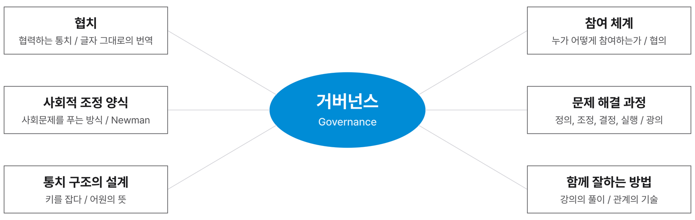
이론이 많다는 것
거버넌스를 정의하는 이론은 학자마다 다르고, 지금도 새로운 논문이 계속 나옵니다. 처음 공부하는 사람에게는 혼란스럽지만, 이 다양성은 그만큼 풍부한 연구 기회가 열려 있다는 뜻이기도 합니다. 이 자료는 그중 국내 개론서로 읽기 쉽고 흐름이 잘 정리된 이명석의 『거버넌스 신드롬』의 구성을 따라갑니다.
사회적 조정이라는 정의
Governance as Social Coordination
이 수업이 출발점으로 삼는 정의는 하나입니다. 거버넌스는 다양한 사회문제를 해결하는 방법, 곧 넓은 의미의 사회적 조정입니다.
Janet Newman의 정의
거버넌스는 다양한 사회의 문제를 해결하는 방법, 즉 일반적인 의미의 사회적 조정이다.
Janet Newman
영국의 사회정책 연구자 Janet Newman은 거버넌스를 특정 조직이나 제도가 아니라 사회가 문제를 풀어 가는 방식으로 봅니다. 여기서 ‘조정’은 서로 다른 이해와 요구를 가진 사람들 사이에서 함께 받아들일 수 있는 길을 찾는 일입니다.
이 정의를 공공디자인에 옮기면 다음과 같습니다. 다양한 사회문제를 디자인으로 해결하려는 공공 영역에서, 공공디자인 거버넌스는 여러 이해관계자와의 조정에 관한 전략입니다.
벤치 하나의 변화
2000년대 초 어느 도시재생 사업에서 벤치 하나를 놓으려 하자 동네 주민들이 이유도 묻지 않고 거세게 반대한 일이 있었습니다. 공공이 하는 일은 일단 싫고, 큰 소리를 내야 무엇이라도 얻는다고 생각했던 시절입니다. 결국 의자 몇 개를 더 놓아 주는 것으로 마무리되었습니다.
지금은 의자 하나를 놓더라도 주민과 이야기하고, 어떤 의자가 좋을지 인터뷰하고, 함께 정하는 과정을 거칩니다. 멋진 벤치 하나로 주민을 설득하는 시대는 지났습니다. 디자인의 답이 결과물보다 과정에서 나오는 시대가 된 것이고, 공공디자인 진흥 제도도 점점 과정을 중시하는 쪽으로 움직이고 있습니다.
두 개의 질문
이 강의 전체를 꿰는 질문은 두 가지입니다. 사회는 다스려져야 하는가, 그리고 사람들은 어떻게 참여하는가. 앞의 질문은 통제와 조정의 구조를, 뒤의 질문은 참여의 방식을 묻습니다. 다섯 가지 거버넌스는 이 두 질문에 대한 서로 다른 답입니다.
공공디자인 비전의 확장
Object, Subject, Execution
공공디자인이 무엇을 목표로 삼아 왔는지를 보면 왜 지금 거버넌스가 중요한지 알 수 있습니다. 대상에서 목적으로, 목적에서 방법으로 관심이 넓어졌습니다.
대상, 목적, 방법
처음 공공디자인은 눈에 보이는 대상에서 출발했습니다. 공공시설물, 매체, 용품, 공간처럼 만질 수 있는 것들입니다. 자동차 번호판이나 가로 시설물을 새로 디자인하는 일이 대표적입니다.
다음 단계에서는 그 대상이 무엇을 위한 것인지가 중요해졌습니다. 안전한가, 편리한가, 배려하고 있는가, 도시의 품격을 높이는가와 같은 주제적 가치입니다.
지금은 그 가치를 어떻게 실행하고 운영할 것인가가 과제입니다. 협력, 참여, 거버넌스처럼 일이 이루어지는 방식이 공공디자인의 전략적 영역이 되었습니다.
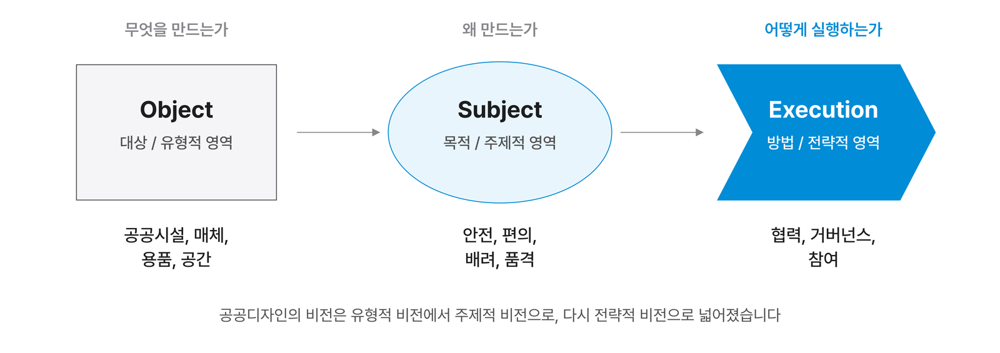
디자인적 관리
공공디자인 영역에서 디자인적 관리, 곧 스튜어드십(Stewardship)은 소통과 협력의 방식을 기반으로 해야 합니다. 그래서 최근 다양한 방식으로 나타나는 거버넌스의 유형과 방법론을 살피고, 협력형 모델을 탐구해 공공디자인 거버넌스의 가능성을 찾는 일이 중요합니다. 5강에서 다룬 스튜어드십이 이 지점에서 거버넌스와 만납니다.
도시 의제의 흐름
국제기구가 내놓는 도시 의제에서도 같은 흐름이 보입니다. 새천년개발목표(MDGs) 시기에는 물리적 환경을 개선하는 일이 중심이었고, 2015년 이후 지속가능발전목표(SDGs) 시기에는 지속가능성과 포용성이 강조되었습니다. 그 뒤로는 세계경제포럼이 2018년 발표한 애자일 거버넌스(Agile Governance)처럼 ‘공공 부문이 어떻게 더 빠르고 유연하게 운영될 것인가’가 주요 의제가 되었습니다.
Kevin Lynch는 『좋은 도시형태론』(1981)에서 좋은 도시의 성능으로 활력, 감각, 적합성, 접근성, 통제를 들고, 이를 아우르는 기준으로 효율성과 형평성을 제시했습니다. 형평성과 접근성은 물리적인 유니버설 디자인만을 뜻하지 않습니다. 지역의 공공 문제를 해결하는 과정에 사람들이 얼마나 공정하게 들어가 의견을 낼 수 있는가도 여기에 포함됩니다.
거버넌스의 어원
From Kubernan to Governance
단어의 뿌리를 따라가면 개념의 성격이 보입니다. 거버넌스는 ‘키를 잡고 배를 조종한다’는 말에서 출발했습니다.
키를 조종하다
거버넌스의 뿌리는 그리스어 kubernan입니다. ‘키를 조종하다(steer, pilot)’라는 뜻으로, 플라톤은 이 말을 통치에 비유해 ‘통치 체제의 설계’를 뜻하는 용어로 썼습니다. 이 말은 중세 라틴어 gubernare로 이어지며 ‘규칙 만들기’, ‘조종하기’의 뜻을 갖게 되었습니다.
1960년대 독일 출신의 정치학자 Karl Deutsch는 같은 뿌리에서 나온 사이버네틱스(Cybernetics)를 정치에 적용해, 국가가 방향타를 잡는(steering) 역할을 해야 한다고 보았습니다. 거버넌스에 새로운 의미가 더해진 순간입니다.
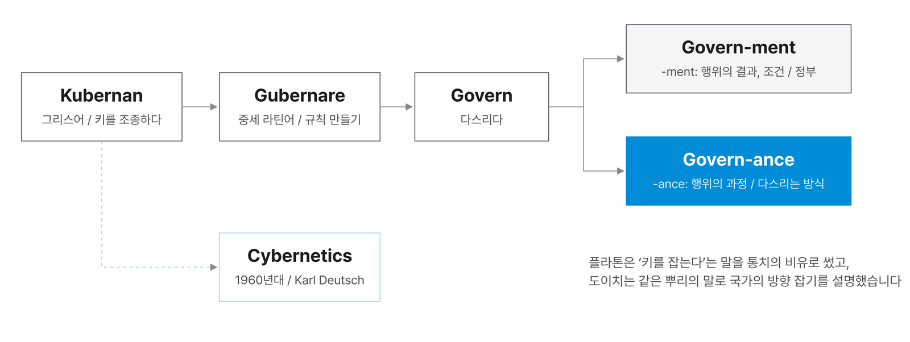
-ment와 -ance
동사 govern에 명사를 만드는 꼬리를 붙이면 두 단어가 됩니다. 옥스퍼드 영어사전은 Government를 ‘다스리는 행위 또는 기구’로 풀이합니다. -ment가 행위의 결과나 조건을 나타낸다면, -ance는 행위가 이어지는 과정을 나타낸다고 읽을 수 있습니다.
다만 접미사의 차이로 두 단어의 뜻을 설명하는 것은 이해를 돕는 장치일 뿐입니다. 문헌을 살펴보면 두 단어는 사실상 각각 고유한 개념어로 자리 잡았습니다. 중요한 것은 같은 뿌리에서 나온 두 말이 오늘날 거의 반대의 뜻으로 쓰인다는 점입니다.
Government와 Governance
Two Modes of Coordination
Government는 위에서 아래로 다스리는 체계이고, Governance는 아래에서부터 함께 참여해 만들어 가는 방식입니다. 두 체계의 맥락을 구분해야 거버넌스를 논할 때 헷갈리지 않습니다.
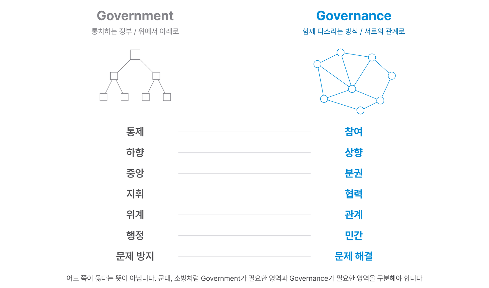
강의실의 두 장면
교수가 앞에 서서 강의하는 동안의 강의실은 Government 상황입니다. 한 사람이 진행을 통제하고, 내용은 위에서 아래로 전달됩니다. 교수가 강의실을 나가면 곧바로 Governance 상황으로 바뀝니다. 학생들끼리 이야기하고, 의견을 나누고, 서로 참여합니다.
Government의 전달 방식은 물이 위에서 아래로 떨어지는 폭포(waterfall)와 같습니다. 지시가 하달되는 구조입니다. Governance는 위로 거슬러 올라간다기보다 여러 흐름이 나란히 섞이는 구조에 가깝습니다.
대칭과 권위의 건축
Government의 성격은 건축 언어에도 드러납니다. 전통적인 관공서와 법원 건물은 대개 좌우가 대칭이고, 기단과 몸통과 머리의 3단 구조로 지어집니다. 대칭은 사람의 몸을 닮은 구조여서 건물을 거대한 인물처럼 보이게 하고, 보는 사람에게 위압감을 줍니다.
건물 앞에 길고 곧은 진입로(promenade)를 두는 것도 같은 장치입니다. 방문자는 건물을 바라보며 오랫동안 걸어 들어가야 하고, 그 사이 협상의 주도권은 건물 안의 사람에게 넘어갑니다. 조직도 역시 대부분 데칼코마니처럼 대칭으로 그려집니다.
1960년대 Jacques Derrida가 말한 해체(deconstruction)의 철학은 이런 질서를 의심했습니다. 왜 대칭이어야 하고, 왜 아래가 무겁고 위가 가벼워야 하는가. 그 생각이 건축으로 옮겨 온 것이 Zaha Hadid의 비트라 소방서 같은 해체주의 건축입니다. 공공디자인이 사람을 중심에 두는 인본주의 위에 서 있다는 점에서 이런 생각의 흐름은 우리와도 닿아 있습니다.
위계와 관계
위계와 관계는 모두 방향을 가진 연결이지만 성격이 다릅니다. 위계에는 절댓값이 있습니다. 내 위치가 고정된 상태에서 다른 사람과의 관계가 정해집니다. 관계에는 절댓값이 없습니다. 어느 자리에서 보더라도 나와 상대 사이의 연결로만 설명됩니다.
옆으로 권한을 나누어 주는 분권 체계조차 이미 중앙의 통제를 받는다는 점에서 위계의 일부일 수 있습니다. 네트워크의 관점이란 누가 교수이고 누가 학생인지 모르게 섞여 앉은 강의실처럼, 정해진 자리가 없는 연결을 말합니다.
섞으면 안 되는 두 영역
공공 행정에는 Government가 꼭 필요한 영역이 있습니다. 군대, 경찰, 소방처럼 상명하복의 위계 없이는 임무를 수행할 수 없는 조직입니다. 중앙부처의 공문서는 누가 작성해도 같은 형식과 같은 문장으로 나와야 하고, 민방위 경보 방송은 수십 년 동안 같은 어조로 훈련된 목소리로 나옵니다. 개인의 생각보다 일관성이 중요한 체계이기 때문입니다.
Government는 매뉴얼에 따라 움직이며 문제를 예방하는 데 강하고, Governance는 문제를 해결하는 방안을 함께 찾는 데 방점을 둡니다. 어느 쪽이 좋거나 나쁜 것이 아닙니다. 가장 큰 혼란은 두 영역을 섞을 때 생깁니다. 군대에 분권 조직을 적용하거나, 주민과 함께 정해야 할 일을 명령으로 처리하는 경우입니다. 공공디자인은 주로 Governance 쪽, 곧 민간과 시민이 함께하는 영역을 연구합니다.
광의와 협의의 거버넌스
Broad and Narrow Governance
거버넌스를 처음 들으면 흔히 ‘협치’로 번역합니다. 틀린 말은 아니지만 이것은 텍스트의 해석이고, 학술적으로 연구되는 거버넌스는 그보다 넓습니다.
협치를 넘어
협의의 거버넌스는 얼마나 협력해서 참여할 것인가, 곧 참여 체계의 문제입니다. 주민협의체, 자문회의, 공청회처럼 사람들이 의견을 내는 통로를 어떻게 만들 것인가를 다룹니다.
광의의 거버넌스는 사회문제를 해결하는 과정 전체에서 우리가 어떻게 통제되고 어떻게 참여해야 하는가를 다룹니다. 문제를 누가 정의하는지, 이해관계를 어떻게 조정하는지, 누가 결정하고 실행하는지, 결과를 누가 관리하고 평가하는지가 모두 들어갑니다. 앞에서 본 두 질문, ‘사회는 다스려져야 하는가’와 ‘사람들은 어떻게 참여하는가’가 각각 광의와 협의의 거버넌스에 대응합니다.
이 수업은 거버넌스를 넓은 뜻으로 읽습니다. 디자인에 거버넌스를 더한다는 것은 단순히 주민 의견을 듣는 절차를 추가하는 것이 아니라, 문제 해결 과정 전체를 함께 설계한다는 뜻입니다.
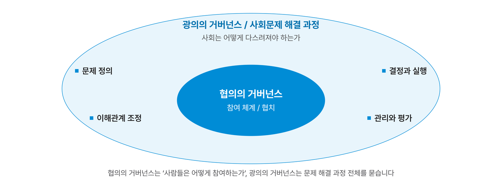
Part 2 / A Short History of Governance
거버넌스 이론의 흐름
정부에서 거버넌스로, 다섯 단계의 진화
정부에서 거버넌스로
From Government to Governance
거버넌스 논의는 1960년대에 싹트고 1970년대 국가 실패의 경험 속에서 자랐습니다. 한국에서는 민주화와 함께 1990년대 이후 본격적으로 관심을 받았습니다.
| 시기 | 인물과 흐름 | 핵심 생각 |
|---|---|---|
| 1960년대 | Karl Deutsch / 사이버네틱스 | ‘키잡이’를 뜻하는 그리스어에서 나온 사이버네틱스를 정치에 적용합니다. 국가는 방향타를 잡는(steering) 역할을 해야 한다고 보았습니다. |
| 1970년대 | Harlan Cleveland / 더 작은 정부, 더 많은 거버넌스 | 정부 부문이 지나치게 커지며 국가 실패가 드러납니다. 미국 외교관 출신 학자 클리블랜드는 정부의 역할을 줄이고 공공서비스를 넓혀 국정관리 체계를 다시 세우자고 제안합니다. 정부, 시장, 시민사회를 하나의 통치 네트워크로 보는 관점이 생깁니다. |
| 1980년대 | 세계은행, OECD / 좋은 거버넌스 | 국제기구가 제3세계 국가의 국정관리 능력을 높이는 방안으로 좋은 거버넌스를 내세웁니다. 여러 주체의 협력과 결과에 대한 책임의 공유를 함께 강조합니다. |
| 1980년대 이후 | B. Guy Peters / 정부 없는 거버넌스 | 시민사회와 시장이 정부의 동등한 파트너로 떠오릅니다. 신자유주의의 흐름 속에서 정부 안에서도 협력과 협상이 필수가 됩니다. 한국에서는 민주화, 정보화, 세계화와 함께 권력의 분권화가 활발해지며 거버넌스에 관심이 커집니다. |
| 1990년대 | Osborne과 Gaebler / 노 젓기에서 방향 잡기로 | 『정부 재창조』(1992)는 정부의 역할을 노 젓기(rowing)가 아닌 방향 잡기(steering)로 바꾸자고 주장합니다. 정책 결정에 시민사회의 참여가 넓어지고, 글로벌 거버넌스와 로컬 거버넌스가 함께 논의됩니다. |
왜 1970년대였는가
가난한 집을 떠올려 보면 이해가 쉽습니다. 당장 먹고사는 일이 급할 때는 가장의 명령에 모두가 따릅니다. ‘기상’ 하면 일어나고 ‘청소’ 하면 청소합니다. 그런데 자녀가 자라 대학생이 되고 스스로 돈을 벌게 되면, 같은 명령이 더는 통하지 않습니다.
사회도 비슷합니다. 2차 세계대전 직후 냉전과 재건의 시기에는 강한 통치가 잘 작동했습니다. 경제가 성장하고 민주화가 진행되면서 하나의 덩어리로 보이던 시민이 저마다 다른 목소리를 내기 시작했고, 정부만으로 통제되는 사회에 대한 의문이 커졌습니다. 서구에서는 1970년대부터, 한국에서는 문민정부가 들어선 1990년대 이후부터 이런 다양한 목소리를 존중하는 흐름이 뚜렷해졌습니다.
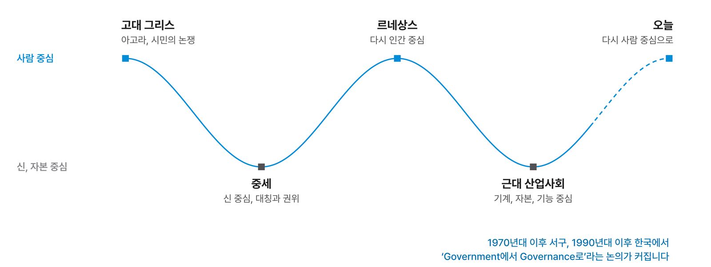
역사의 물결
더 길게 보면 인류의 역사는 사람 중심과 다른 무언가 중심 사이를 오가며 흘러왔습니다. 고대 그리스의 아고라에서는 시민이 모여 논쟁했고, 중세에는 신이 중심이 되어 그림마저 신을 가운데 두고 대칭으로 그렸습니다. 르네상스에서 다시 인간이 중심에 섰고, 산업혁명 이후 근대에는 기계와 자본, 기능이 중심이 되었습니다.
지금 우리는 그 근대의 기능주의에서 다시 사람 중심으로 옮겨 가는 길 위에 있습니다. Victor Papanek이 1970년대 초 윤리적 디자인을 말하고, 유니버설 디자인과 사회를 위한 디자인이 나온 것도 이 흐름과 맞닿아 있습니다. 거버넌스가 Government를 대신하는 말로 떠오른 것 역시 같은 시대적 맥락에서 읽을 수 있습니다.
다섯 단계 한눈에 보기
Five Modes at a Glance
이명석은 거버넌스의 흐름을 계층제, 좋은, 네트워크, 협력적, 메타 거버넌스의 다섯 단계로 정리합니다. 앞 단계의 한계를 넘으려는 시도가 다음 단계를 낳았습니다.
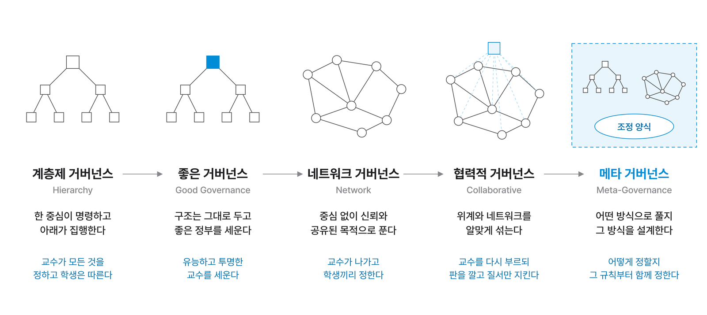
형태에서 방식으로
강의실로 다섯 단계를 정리해 보겠습니다. 처음에는 교수가 모든 것을 정하고 학생은 따릅니다(계층제). 문제가 생기자 구조는 그대로 두고 더 유능하고 투명한 교수를 세웁니다(좋은 거버넌스). 그래도 한계가 있어 교수가 나가고 학생끼리 정해 보게 합니다(네트워크). 너무 시끄럽고 다툼이 생기자 교수를 다시 부르되, 판만 깔고 질서만 지키도록 권한을 줄입니다(협력적).
여기까지는 조직의 형태를 바꾸는 시도였습니다. 형태 놀음으로는 더 나올 것이 없다는 판단에서, ‘넘어선다’는 뜻의 메타(meta)를 붙인 메타 거버넌스가 나옵니다. 이제는 어떤 구조인가가 아니라, 문제를 어떤 방식으로 풀 것인가 그 자체를 설계합니다.
Part 3 / Five Modes of Governance
다섯 가지 거버넌스
계층제에서 메타 거버넌스까지
계층제 거버넌스
Hierarchical Governance
가장 전형적이고 가장 튼튼한 모델입니다. 계단과 층계가 있는 거버넌스, 곧 하나의 중심에서 명령이 내려가고 아래에서 집행하는 관료제의 방식입니다.
여섯 가지 전제
계층제 거버넌스는 다음과 같은 생각 위에 서 있습니다.
- 단일한 권력 중추가 존재하며, 정부가 통제를 받습니다.
- 권력은 분산될수록 무책임해지고, 집중되고 통제될수록 책임성이 강해집니다.
- 정치가 행정의 업무를 정하지만, 행정은 정치 바깥의 영역에 있습니다.
- 행정 기능에 관한 한 모든 정부는 구조적으로 비슷합니다.
- 전문적으로 훈련된 공무원을 계층화하는 것이 좋은 행정의 조건입니다.
- 조직을 계층화하면 최소 비용으로 측정되는 능률성이 극대화됩니다.
국민 스스로 해결할 수 없는 사회문제를 해결하기 위해서는 강제력을 가진 제3자인 ‘정부’의 개입이 필요하다. 계층제적 지시를 통해 사회적 조정이 이루어진다.
이명석, 『거버넌스 신드롬』
책임을 모으는 이유
이 강의실의 총괄 책임자가 교수라고 정하면, 교수는 사고가 나지 않도록 신경 쓰고 불편한 사람은 없는지 살핍니다. 반대로 ‘수업만 하면 되고 나머지는 관리자가 따로 맡는다’고 하면 그렇게 하지 않을 것입니다. 단일한 권력 중추는 사람들이 서로 책임을 미루지 않게 하려는 장치입니다.
대의민주주의도 같은 원리를 씁니다. 선출하는 과정은 투명하게 하되, 뽑힌 대표에게 권한을 모아 책임 있게 일하게 합니다. 그런데 권한이 집중된 만큼, 잘못 쓰였을 때 피해도 커집니다. 한 사람의 결정이 세계 경제를 흔드는 장면을 우리는 자주 봅니다. 그래서 권한을 모아 주되 그 권한을 견제할 제도를 함께 갖추는 일이 중요합니다. 대학의 교원 재계약과 정기 평가 제도도 이런 견제 장치의 하나입니다.
능률과 역량
계층화된 조직은 능률적입니다. 역할이 정해져 있어 빠르게 움직이고 비용이 적게 듭니다. 그러나 각자 정해진 역할 이상은 하지 않으므로, 구성원이 가진 역량이 최대치로 나오지는 않습니다. 군대에서는 소대원이 더 나은 판단을 갖고 있어도 소대장의 명령을 따라야 사고가 나지 않습니다.
수업 시간에 학생들이 할 말이 있어도 조용히 있는 것도 같은 현상입니다. 한 사람 한 사람이 강의를 해도 될 만큼의 경험을 가졌는데, 위계적인 분위기 속에서는 그 역량이 묻힙니다. 소수와 개인의 좋은 의견은 위로 올라가기 어렵고, 맡은 업무 밖의 일에는 아무도 나서지 않게 됩니다.
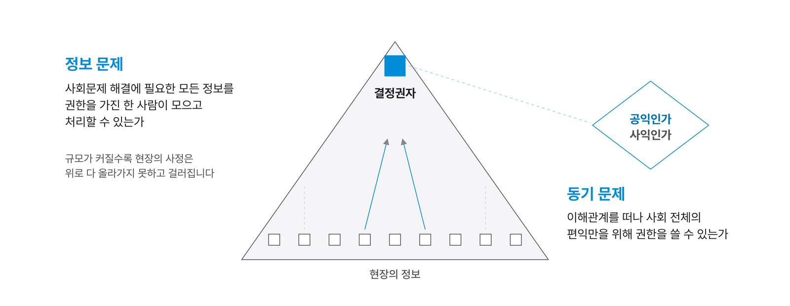
사회과학의 신화
Fritz Scharpf는 계층제 거버넌스가 ‘사회과학의 신화(myth)’라고 말합니다. Renate Mayntz의 정리를 빌리면 그 이유는 두 가지입니다.
첫째는 정보 문제입니다. 조직이 일정 규모를 넘으면 결정권자가 현장의 정보를 모두 알 수 없습니다. 총장은 강의실 벽에 덕지덕지 붙은 테이프 자국도, 책상이 불편하다는 사실도 알기 어렵습니다. 결국 현장을 잘 모르는 참모가 조언하고, 판단은 그만큼 부정확해집니다. 미국 대통령은 아무리 복잡한 국제 문제라도 A4 한 장으로 보고받는다고 합니다. 판단할 수 있는 형태로 정보를 줄여야 하기 때문입니다.
둘째는 동기 문제입니다. 권한을 가진 사람이 사익을 떠나 오직 사회 전체의 편익을 위해 권한을 쓸 수 있는가의 문제입니다. 팀 예산 100만 원을 나누어 쓸 때 리더가 자기 몫을 먼저 챙기지 않으리라고 장담할 수 있을까요. 인간인 이상 늘 윤리적일 수는 없습니다. 그래서 계층제 조직의 리더에게는 능력보다 윤리가 더 중요하다는 말이 있습니다. 능력은 참모가 채우지만, 최종 결정은 리더의 윤리로 내려지기 때문입니다.
계층제적 지시를 너무나 당연하고 불가피한 사회조정 양식으로 받아들이고 있고, 한계를 느끼지 못하고 새로운 사회 조정양식의 대안을 탐색하는 데 실패하고 있다.
이명석, 『거버넌스 신드롬』
이명석은 이를 ‘계층제 중독(addiction to hierarchy)’이라고 부릅니다. 거버넌스를 말하면서도 실제로는 명령 체계를 강화하는 데 머문다면 진정한 변화가 될 수 없다는 비판입니다.
잘 작동하는 조건
계층제 거버넌스는 사회가 덜 복잡하고, 정책 영역의 경계가 분명하며, 중앙에 정보와 권한이 모여 있을 때 잘 작동합니다. 무언가를 빠르게 새로 만들어야 하는 개발 시대에 어울리는 방식입니다. 오늘날에도 재난 초기 대응, 군과 경찰의 명령 체계처럼 위계가 꼭 필요한 영역이 있습니다. 반대로 원인이 얽히고 이해관계자가 많은 문제에는 유연하게 대응하지 못합니다.
좋은 거버넌스
Good Governance
계층제의 형식은 유지하되, 문제가 구조가 아니라 꼭대기에 있는 사람에게 있다고 봅니다. 그렇다면 그 자리에 좋은 정부, 좋은 사람이 있으면 됩니다.
좋은 정부를 세우다
효과적이고 정직하고 투명하고 책임감 있는 정부에 의한 국가권력의 적절한 사용.
캐나다 국제개발청(CIDA)
좋은 거버넌스(Good Governance)는 계층제 거버넌스의 위계를 그대로 두고, 그 정점에 있는 정부가 유능하고 정직하며 투명하고 책임감 있게 행동하도록 만드는 데 집중합니다. 여기서 ‘좋은’은 주로 사람 한 명이 아니라 정부 조직과 기관의 자질을 가리킵니다.
좋은 거버넌스는 민주적 통제가 가능한 유능한 정부의 계층적 지시에 의한 사회문제 해결을 강조한다.
이명석, 『거버넌스 신드롬』
| OECD가 제시한 좋은 거버넌스의 요소 | 세계은행 국제 거버넌스 지수(WGI) |
|---|---|
| 공직자의 기술적, 관리적 능력 | 참여와 책임성(Voice and Accountability) |
| 공공 부문의 조직적 역량 | 정치적 안정과 비폭력성 |
| 신뢰성과 예측 가능성을 갖춘 법의 지배 | 정부 효과성 |
| 책임성 | 규제 품질 |
| 투명성과 정보 공개 | 법의 지배 |
| 참여 | 부패 통제 |
국제기구의 언어
좋은 거버넌스는 1980년대 세계은행, OECD 같은 국제기구가 개발도상국을 지원하는 맥락에서 널리 쓰였습니다. 원조를 받는 나라가 갖추어야 할 국정관리의 기준이라는 성격이 있었고, 여러 나라가 집단으로 기준을 정하고 점검하는 방식이었습니다.
‘민주적 통제가 가능한’이라는 말은 집단적 견제가 가능하다는 뜻으로 읽을 수 있습니다. 한 전공을 교수 한 사람이 혼자 운영하면 언젠가는 사사로운 감정이 결정에 섞입니다. 다섯 명의 교수가 함께 결정하면 그나마 건강한 관계를 유지할 수 있습니다. 사람이 모여 사는 이상 위계가 전혀 없는 사회는 상상하기 어렵기에, 위계를 인정하되 그것을 민주적으로 통제하려는 좋은 거버넌스는 현실적인 이상으로 여겨지기도 합니다.
수업에서는 공무원에게 높은 처우를 보장하고 우수한 인재를 공직으로 선발하는 싱가포르의 사례가 이야기되었습니다. 강한 중앙 통치를 유지하면서도 투명하고 유능한 행정으로 평가받는다는 점에서 좋은 거버넌스의 이상과 한계를 함께 생각해 볼 수 있는 사례입니다.
좋은 거버넌스의 한계
이명석은 좋은 거버넌스가 관료제 패러다임과 충분히 결별하지 못하면 ‘좋아 보이지만 실질적 변화가 없는 보완’에 그칠 수 있다고 지적합니다. 좋은 원칙을 나열하는 데 머물거나, 시민 참여가 절차적 정당성을 얻기 위한 형식이 되거나, 공공가치보다 효율과 성과 측정이 앞서는 경우입니다. 같은 시기 등장한 신공공관리론(NPM)과 결합하면서 ‘더 작고 효율적인 정부’라는 관리의 언어가 강해진 것도 이와 관련이 있습니다.
- 국내 예: 행정정보 공개 제도, 지방자치단체의 주민참여예산제, 공공기관 채용과 입찰의 부패 방지 제도
- 국외 예: 세계은행과 유엔개발계획(UNDP)의 거버넌스 개선 프로그램
네트워크 거버넌스
Network Governance
정부가 혼자 힘으로 풀 수 없는 문제가 늘어나면서, 사회 구성원들이 서로 협상하고 협력해 문제를 푸는 방식이 등장했습니다. 그 배경에는 ‘사악한 문제’와 다중심 사회가 있습니다.
다중심 사회의 출현
네트워크 거버넌스의 핵심어는 협상을 통한 동의, 다중심 사회의 출현, 구성원 사이의 상호작용과 협력입니다. 사람을 중심에 두는 사회에서는 키 큰 사람, 작은 사람, 누워 있는 사람처럼 다양한 존재를 모두 인정할 수밖에 없습니다.
건축 계획 교과서에는 의자 높이 45cm, 책상 높이 75cm 같은 표준이 정답처럼 적혀 있습니다. 그런데 최근 어느 지하철역에는 높이가 서로 다른 의자가 나란히 놓여, 각자 몸에 맞는 높이를 골라 앉을 수 있습니다. 표준이 틀렸다기보다 하나의 정답이 여러 개의 답으로 바뀌어 가는 것입니다. 유니버설 디자인이 나온 배경도 여기에 있습니다.
사악한 문제
3강에서 다룬 사악한 문제(wicked problem)는 Horst Rittel과 Melvin Webber가 1973년 계획 이론의 딜레마로 정리한 개념입니다. ‘사악하다’는 말은 문제가 나쁘다는 뜻이 아니라, 아무리 애써도 깔끔한 정답이 나오지 않는다는 뜻입니다. Robert Agranoff는 이를 네트워크 거버넌스가 등장한 배경으로 설명합니다. 그 특징은 다음과 같습니다.
- 문제가 모호하고 이해관계자마다 생각이 달라 문제를 정의할 수 없습니다.
- 맞고 틀림의 문제가 아닙니다.
- 완전한 해결은 불가능하고 만족할 만한 수준의 해결만 가능합니다.
- 해결책의 성패를 판단할 기준이 없습니다.
- 전례가 없고 저마다 독특합니다.
- 문제가 얽혀 있어 하나의 문제는 다른 문제의 징후입니다.
- 문제를 설명하는 방식이 해결책의 본질을 결정합니다.
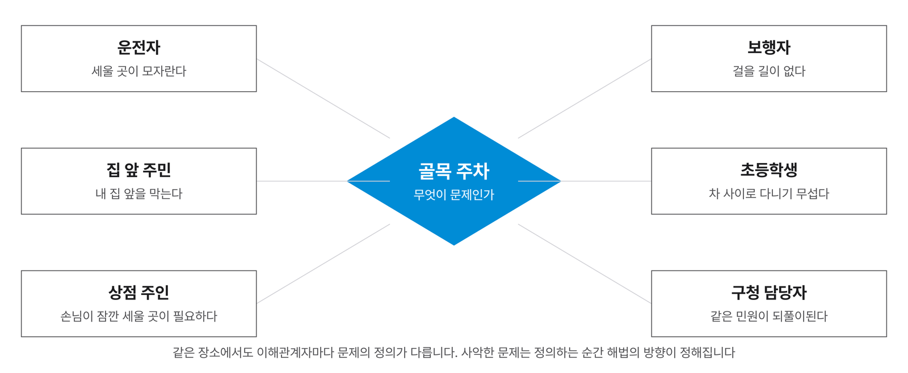
정답이 없는 문제
주차 문제를 예로 들어 보겠습니다. 차를 대는 사람, 집 앞에 사는 사람, 그 길을 걷는 사람, 구청 담당자, 학교에 다니는 초등학생에게 각각 물으면 ‘주차 문제’의 뜻이 모두 다릅니다. 하나의 답으로 정리할 수 없습니다.
근대에는 이런 문제에도 답이 있었습니다. 위계적인 권력이 정하면 그것이 답이었습니다. 1900년대 초 대구에서는 읍성이 주민의 의견과 상관없이 헐리고, 그 자리에 오늘날의 동성로, 서성로, 남성로, 북성로가 놓였습니다. 지금처럼 민주화된 사회에서는 상상하기 어려운 방식입니다.
저녁 메뉴를 고르는 일, 수업을 몇 시에 끝낼지 정하는 일, 강의실 벽을 무슨 색으로 칠할지 정하는 일에도 정답은 없습니다. 공공의 문제는 대부분 이런 성격을 가집니다. 정부가 명령으로 풀 수 없는 문제가 늘어나면서, 해결 당사자들 사이의 상호의존성이 커졌습니다.
네트워크의 정의
학자들은 네트워크 거버넌스를 다음과 같이 정의합니다. 공통점은 계층제적 통제에 기대지 않는다는 것입니다.
- 계층제적 통제에 의존하지 않고 신뢰 등에 의해 형성되는 네트워크에 의한 사회문제 해결 / David Beetham
- 공유된 목적에 의해 이루어지는 사회문제 해결 / James N. Rosenau
- 계층제적 통제나 정부 간섭에 의존하지 않고 사회 구성 단위 스스로 협력을 통하여 사회문제를 해결하는 능력 / Gerry Stoker
강의실 벽 색을 정할 때 교수가 빠지고 학생들끼리 모여 빨강이 좋을지 파랑이 좋을지 이야기하는 장면이 네트워크 거버넌스입니다. 정부 중심의 상하 관계라는 틀을 깼다는 점이 가장 큰 의의입니다. 정부는 지휘자가 아니라 네트워크를 만들고 조건을 조정하는 역할로 바뀝니다.
중심이 사라질 때
중심이 없어지면 혼란도 생깁니다. 네트워크는 비슷한 사람끼리 뭉치는 군집(cluster)을 만들기 쉽고, 모두가 하나로 모이는 상태는 이상에 가깝습니다. 이명석은 네트워크 거버넌스의 한계로 다음을 듭니다.
- 책임성의 모호함: 여러 주체가 얽혀 있어 책임의 소재가 불분명해집니다.
- 조정 실패: 이해관계가 부딪히면 결정이 늦어집니다.
- 포획의 위험: 특정 주체가 네트워크 안에서 권력이 될 수 있습니다.
- 표피적 사용: 협력의 실제 구조 없이 ‘네트워크’라는 말만 쓰는 경우가 생깁니다.
협력적 거버넌스
Collaborative Governance
위계의 질서와 네트워크의 자율을 알맞게 섞는 방식입니다. 오늘날 공공 영역에서 가장 많이 볼 수 있는 모습이기도 합니다.
조정 양식의 혼합
사회문제를 해결하는 최선의 수단을 탐색하는 과정에서 가장 중요한 것은 사회적 조정양식의 적절한 혼합이다.
R. A. W. Rhodes
교수가 나간 강의실이 너무 시끄러워지고 다툼이 생기자 학생들이 말합니다. 교수님을 다시 부르자. 대신 예전처럼 모든 것을 정하지 않도록, 수업만 하고 나머지는 우리가 정하자. 이것이 협력적 거버넌스의 장면입니다. 위계가 가진 전형적인 질서와 네트워크가 가진 자율을 섞은, 말하자면 ‘섞어 쓰는 거버넌스’입니다.
공공기관이나 권한을 가진 기관은 통제는 하되 내용에는 관여하지 않습니다. 판을 만들고 질서를 지키며, 그 안에서 네트워킹이 이루어지게 합니다. ‘이것이냐 저것이냐’의 이분법을 넘어섰다는 점에 의의가 있습니다.
공공디자인의 사례
서울 디자인 거버넌스가 대표적입니다. 예전에는 행정이 직접 개입해 디자인 안을 승인하고 만들게 했지만, 이 사업에서는 시민과 이해관계자가 직접 문제를 찾고 디자인 대안을 제안합니다. 행정은 판을 만들어 줍니다.
행정안전부의 국민디자인단도 같은 모델입니다. 국민, 공무원, 서비스디자이너가 함께 공공서비스를 설계하는 방식으로, 국가 단위에서 이만큼 크게 운영한 사례가 드물어 해외에서도 주목받았습니다. 통치의 관점을 가지되 통치의 권한을 작게 하고, 그 안에서 네트워크의 장점을 살린 것입니다.
넓게 정의하기
이명석은 협력적 거버넌스를 넓게 정의합니다. 그 특징은 행정학에서 널리 인용되는 Ansell과 Gash(2008)의 좁은 정의와 비교하면 분명해집니다.
| Ansell과 Gash(2008)의 좁은 정의 | 이명석의 넓은 정의 |
|---|---|
| 공공기관이 시작하고 주도합니다 | 공공기관에 의한 것만도, 민간 주도에 의한 것만도 아닙니다 |
| 누가 참여하는지가 기준이 됩니다 | 상호작용의 주체보다 상호작용의 유형이 중요합니다 |
| 단순한 자문을 넘어 결정에 직접 참여해야 합니다 | 의견 청취나 자문 같은 일방적 상호작용도 포함합니다 |
| 공식적으로 조직되어 정기적으로 만납니다 | 공식적으로 구조화되지 않은 협력도 포함합니다 |
| 합의에 의한 결정을 지향합니다 | 의견 일치를 추구하지 않는 협력도 포함합니다 |
| 공공정책과 공공관리를 다룹니다 | 정책 결정뿐 아니라 집행 단계의 참여도 포함합니다 |
성공의 조건과 한계
협력적 거버넌스는 숙의와 공동의 문제 해결을 중시합니다. 이해당사자가 초기부터 참여하고, 정부가 문제를 내려주는 것이 아니라 함께 문제를 정의하고 함께 소유합니다. 협력은 계약이 아니라 신뢰와 집단 학습의 산물입니다.
잘 작동하려면 협의체나 위원회 같은 제도적 장치, 공정한 권한 배분, 정보의 개방, 그리고 오랜 관계를 유지할 재정과 시간이 필요합니다. 행정은 권위적인 역할에서 중재하는 역할로 바뀌어야 합니다.
- 권력 비대칭: 일부 주체가 영향력을 독점할 수 있습니다.
- 참여 피로: 협의가 반복되면서 실효성이 떨어집니다.
- 상징적 참여: 협의 결과가 정책으로 이어지지 않으면 형식에 그칩니다.
- 수사의 위험: ‘협력적’이라는 말이 실제 권력관계의 불평등을 가릴 수 있습니다.
메타 거버넌스
Meta-Governance
조직의 형태를 바꾸는 실험은 협력적 거버넌스에서 끝납니다. 메타 거버넌스는 형태가 아니라, 거버넌스를 어떻게 거버넌스할 것인가를 묻습니다.
거버넌스의 거버넌스
사회문제를 해결하는 과정에서 조정하고 관리하는 것. 사회가 다스려지거나 관리되는 새로운 방법.
Bob Jessop
메타 거버넌스는 다양한 조정 양식론에 협력의 방법론을 더한 것, 곧 ‘거버넌스의 거버넌스’입니다. 다양한 이해관계가 존재하는 사회문제를 해결하는 과정에서 여러 이해관계자의 동의를 얻고 조정하는 일입니다.
메타 거버넌스를 또 하나의 조직 형태로 생각하면 헷갈립니다. 위에서 명령할지, 군집을 이룰지, 따로 움직일지를 보는 것이 아니라, 그 관계 속에서 실제로 어떤 일이 벌어졌는가를 봅니다. 결국 문제를 풀어 가는 방식, 답이 아니라 풀이의 방식을 말합니다. 그래서 다시 눈에 보이지 않는 관념의 영역으로 넘어갑니다.
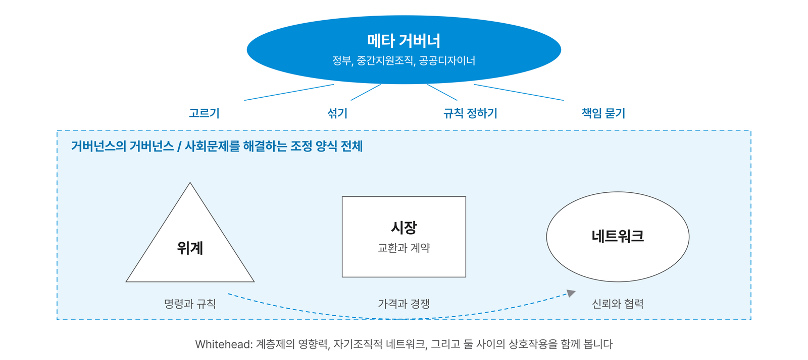
Whitehead의 세 요소
- 사회문제를 해결하는 정치, 경제적 활동을 이끄는 계층제 거버넌스의 영향력을 강조합니다.
- 사회문제 해결 과정에서 스스로 조직되는 네트워크 거버넌스를 강조합니다.
- 계층제 거버넌스와 네트워크 거버넌스 사이의 상호작용을 강조합니다.
총체적인 통제나 총체적인 계획 없이도 새로운 질서에 의해 사회문제가 해결될 수 있다는 생각입니다. 이때 필요한 리더십은 직접 지시하는 리더십이 아니라, 스스로 움직이는 주체들이 잘 움직이도록 조건을 만드는 리더십입니다. 결정은 한 사람의 중심에서 내려진다는 ‘단일 중심적 의사결정자의 신화(Myth of the unitary decision-maker)’가 무너진 자리에서 메타 거버넌스가 나옵니다.
이 수업이 메타 거버넌스를 택한 이유
이 수업의 강의계획서는 ‘메타 거버넌스의 관점에서 공공 영역의 문제를 해결하는 과정을 살펴본다’고 적고 있습니다. 공공 영역의 문제를 해결하는 과정이자 전략이라는 점에서, 메타 거버넌스의 정의는 공공디자인의 정의와 거의 같기 때문입니다. 실제로 행정학과의 거버넌스 수업 커리큘럼을 살펴보면 공공디자인 거버넌스 수업과 겹치는 부분이 매우 많습니다.
메타 거버넌스의 정의는 아직 열려 있습니다. 이명석도 메타 거버넌스를 정확히 정의하기 어렵다고 말하며, 지금도 많은 학자가 새로운 해석을 내놓고 있습니다. 답이 정해지지 않았다는 것은 공부를 어렵게 하지만, 계속 질문이 던져지고 있다는 발전의 증거이기도 합니다. 디자인도 같습니다. 디자인이 정말 사람을 행복하게 만드는가, 지역 경제를 살리는가, 주민 참여에서 어떤 역할을 하는가. 이런 가설을 계속 던지는 일이 디자인의 가치를 높입니다.
메타 거버넌스의 한계
- 복잡성의 역설: 조정하는 주체가 많아질수록 관리가 더 복잡해집니다.
- 책임의 분산: 누가 최종 책임을 지는지 모호해집니다.
- 권력화의 위험: 상위 조정자의 권한이 새로운 관료적 권위로 돌아갈 수 있습니다.
거버넌스의 위기는 더 많은 거버넌스로 해결되지 않는다. 그것을 관리할 메타 수준의 통치가 필요하다.
『거버넌스 신드롬』 문헌분석
다섯 단계 종합
Comparing the Five Modes
다섯 가지 거버넌스를 핵심 구조, 주요 특징, 남는 과제로 나란히 놓아 봅니다. 각 단계의 ‘신드롬적 측면’은 이름만 바뀌고 실제 구조는 그대로인 경우를 경계하는 말입니다.
| 단계 | 핵심 구조 | 주요 특징 | 남는 과제 | 신드롬적 측면 |
|---|---|---|---|---|
| 계층제 거버넌스 | 위계, 명령 | 단일 권위, 명령과 집행 중심 | 유연성 부족, 참여 제한 | ‘조정’을 말하지만 실제로는 명령 체계 강화 |
| 좋은 거버넌스 | 참여, 책임성 | 투명성, 책임성, 법치 강조 | 원칙만으로는 현실 대응 부족 | 통치를 미화하는 언어로 소비 |
| 네트워크 거버넌스 | 상호작용형 네트워크 | 정부, 시장, 시민사회의 협업 | 책임성 약화, 조정 실패 | 협력 구조 없이 말만 ‘네트워크’ |
| 협력적 거버넌스 | 숙의, 공동 해결 | 다양한 이해당사자의 참여 | 권력 비대칭, 참여 피로 | ‘협력’이 권력 불평등을 가림 |
| 메타 거버넌스 | 거버넌스의 설계와 조정 | 조정 양식 사이의 조율과 관리 | 복잡성 증가, 책임 소재 모호 | ‘조정’의 이름으로 통치 권력 정당화 |
다섯 단계를 쓰는 법
다섯 단계는 우열을 가리는 표가 아닙니다. 재난이 막 일어났을 때는 계층제의 빠른 명령이 필요하고, 복구가 길어지면 협력과 네트워크가 필요하며, 여러 기관과 제도를 아우르려면 메타 거버넌스의 조정이 필요합니다. 공공디자이너는 지금 마주한 문제가 어떤 성격인지 읽고, 알맞은 방식을 고르거나 섞을 수 있어야 합니다.
Part 4 / Public Design Governance
공공디자인과 거버넌스
디자인의 동사가 되는 거버넌스
공공디자인에서 관리란 무엇인가
Management in Public Design
공공디자인에서 가장 약한 부분은 관리입니다. 만드는 것까지는 분명한데, 만든 뒤 누가 어떻게 함께 운영할 것인가는 여전히 흐릿합니다.
법이 열어 둔 자리
공공디자인 진흥 제도는 공공디자인 사업을 기획, 조사, 분석, 설계, 설치, 관리의 흐름으로 다룹니다. 심의 제도처럼 행정의 장치가 있지만 마지막 단계인 ‘관리’가 무엇인지는 여전히 애매합니다.
거꾸로 보면 법이 관리를 사업의 범위에 넣어 두었기 때문에, 디자인한 것을 뚝 내놓고 끝내는 것이 아니라 그것을 사람들과 함께 만들어 가는 과정도 공공디자인 사업으로 할 수 있습니다. 진흥 제도를 통한 기획과 평가의 관리가 법적 공공디자인 사업으로 가능하고, 전략 기획을 운용하는 거시적인 과정으로서 거버넌스가 주목받는 이유입니다.
- 사용자의 의견을 듣는 소극적인 참여를 넘어, 전략 기획의 넓은 방법론으로서의 가치
- 사용자 의견 외에도 이해관계자를 발굴하고 관계를 구축하는 방법론으로서의 가치
유지관리의 거버넌스
수업에서 한 학생이 물었습니다. 시설물을 만든 뒤의 유지관리도 거버넌스로 할 수 없습니까? 아주 좋은 연구 주제입니다. 강의자는 이에 대해 시민과 함께 공공시설을 돌보는 ‘퍼블릭 페어(Public Pair)’라는 개념을 제안한 적이 있습니다. 랜드마크 조형물이나 벤치를 만드는 일도 중요하지만, 결국 공공디자인 사업 안에 운영 체계에 대한 개념이 들어가야 합니다.
과정에 답이 있다
사악한 문제에 대한 하나의 답은 ‘과정에 답이 있다’는 것입니다. 강의실 벽을 무슨 색으로 칠했는가라는 결과보다, 색을 정하는 과정에 내가 얼마나 참여했고 내 이야기가 얼마나 받아들여졌는가가 불만을 줄입니다.
오늘날 민원 제도가 발달하고 소송이 늘어난 것은 사람들이 존중받는 사회가 되었다는 뜻이기도 합니다. 단점도 많지만, 다양한 이해관계자를 고려하지 않고는 아무것도 할 수 없는 사회가 되었습니다. 공공디자인은 공공 영역의 문제를 해결하는 과정에서 그런 가치를 만들어 내는 길을 가려고 합니다.
주제의 가치와 실행의 가치
Design as Noun, Governance as Verb
공공디자인은 무엇을 지향해야 하는지에 대한 주제의 가치를 갖고 있습니다. 거버넌스는 그것을 실행하는 동사의 역할을 합니다.
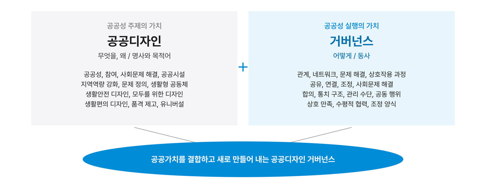
디자인에 부족했던 동사
기능주의 관점의 디자인이 더 예쁘게, 더 잘 팔리게 만드는 데 집중했다면, 공공디자인은 디자인이 시대에 맞게 무엇을 지향해야 하는가라는 가치를 분명히 했습니다. 공공디자인이 디자인에 준 큰 선물입니다.
그러나 디자인 안에는 그 가치를 실행할 언어가 약합니다. 디자인은 여전히 전문가의 영역으로 여겨져, 토목이나 행정 분야의 사람들은 디자인 프로그램의 메뉴만 보고도 거리감을 느낍니다. 거버넌스의 언어, 곧 관계, 연결, 공유, 합의, 공동 관리, 수평적 협력, 조정은 디자인 영역에서 잘 다루지 않던 말들입니다. 거버넌스는 디자인의 가치를 실행하는 동사가 될 수 있습니다.
공공디자인 거버넌스의 정의
이 수업은 공공디자인 거버넌스를 다음과 같이 정의합니다. 공공 영역에서 발현되는 다양한 사회 현상과 문제를 해결하기 위한 제도적, 상호적, 협력적, 과정적, 참여적 방법론의 전략입니다.
이 정의는 공공디자인 행정의 확장 가능성, 그리고 공공디자인 자체의 발전적 확장 가능성(The Extended Public Design)을 함께 가리킵니다. 거버넌스를 통해 지금까지 규정되지 않았던 새로운 공공가치를 결합해 내고, 연결과 결합을 되풀이하며 또 다른 공공가치를 만들어 냅니다.
다양한 이해관계가 존재하는 사회문제를 해결하는 과정을 조정하고 관리하는 조정 양식론과 협력의 방법론으로서, 디자인적 관리와 거버넌스는 공공디자인의 주요 실행 전략으로 매우 적합하고 합리적이다.
강의 슬라이드
유형 연구가 필요한 이유
사회가 복잡해지고 가치가 다양해지면서 협치의 모델에 대한 요구도 다양해졌습니다. 기존의 여러 참여, 협치, 방법, 투자의 유형을 ‘문제 해결 양식’이라는 거버넌스의 관점에서 다시 해석하고, 공공디자인의 전 과정에 걸친 실행 전략으로 유형화하는 연구가 필요합니다.
행정학과 경영학에서만 다루던 ‘관리’와 ‘거버넌스’를 공공디자인이 좁은 뜻의 참여 절차로만 이해한다면 놓치는 것이 많습니다. ‘사회문제 해결의 조정 과정과 양식’이라는 넓은 뜻으로 받아들일 때, 거버넌스는 공공디자인의 혁신적 방법론을 이끌어 내는 수단이 될 수 있습니다.
거버넌스 기반 공공디자인 유형
Types of Governance-based Public Design
우리 사회에는 이미 거버넌스로 공공 문제를 푸는 방식이 많이 있습니다. 강의에서 정리한 사례를 문제 해결의 성격에 따라 열 가지로 나누어 봅니다.
| 분류 | 대표 사례 | 무엇으로 푸는가 |
|---|---|---|
| 문제 해결 | 서울 디자인 거버넌스 / 우리동네 과학클럽 | 시민이 문제를 찾고 해법을 함께 제안합니다 |
| 행정 제도 | 주민참여예산제 / 마을만들기 | 예산과 계획 수립에 주민의 권한을 제도로 보장합니다 |
| 자산 기반 | 시민자산화 / 협동조합 거버넌스 | 공동체가 공간과 자산을 함께 소유하고 운영합니다 |
| 디지털 | IT 디지털 거버넌스 / 블록체인 거버넌스 | 데이터와 플랫폼으로 참여와 결정을 연결합니다 |
| 공동 참여 | 컬렉티브 임팩트 / 리빙랩 | 여러 주체가 하나의 목표에 함께 힘을 모읍니다 |
| 역량 강화 | 도시재생대학 / 도시재생 주민참여 프로그램 | 교육으로 주민이 스스로 문제를 다룰 힘을 기릅니다 |
| 네트워크 | 국민디자인단 / 애자일 프로세스 | 다양한 사람을 묶어 빠르게 시험하고 고칩니다 |
| 의사 협의 | 라운드테이블 / 옴부즈만 제도 | 이해관계를 한자리에서 듣고 조정합니다 |
| 사회혁신 | 시민참여 사회혁신 / 카카오임팩트 | 민간과 기업이 사회문제 해결에 참여합니다 |
| 실행 기반 | 택티컬 어바니즘 / 사회혁신 프로그램 | 작고 빠른 실험으로 변화를 먼저 보여 줍니다 |
더 많은 이름들
커뮤니티 비즈니스, 민간위탁, DIY 어버니즘, 도시 개입(Urban Intervention), 공청회, 다산120 같은 민원 프로그램, 워크숍, 사업평가제, 디자인 샤레트, 집중검토회의, 시민재판관, 청원 제도, 서비스디자인형 프로그램, 파인딩 플레이시스(Finding Places), CSR과 CSV, 사회문제 정의 협업 플랫폼, 국민해결 2018, 서울청년정책네트워크, 한국도로공사 고객디자인단, 행정협의체와 사업추진협의체, 경관협정, 자율상권구역(BID), 일본의 마치즈쿠리, 전자 거버넌스, 빅데이터 활용 아이디어 공모전도 거버넌스 기반 공공디자인의 예입니다. 이 가운데 몇 가지를 조금 더 살펴봅니다.
시민자산화
동네의 오래된 극장이 헐릴 위기에 처하자 주민들이 막아서고, 수십 년 된 굴뚝 목욕탕이 팔리려 하자 시민들이 돈을 모아 건물을 사들이는 일이 곳곳에서 일어나고 있습니다. 공유 자원을 공동체가 소유하고 돌보는 커먼즈(commons) 운동의 한 모습입니다.
옴부즈만 제도
스웨덴에서 시작된 옴부즈만은 행정으로부터 시민을 보호하는 제도에서 출발해, 오늘날에는 더 나은 공공 행정을 촉진하는 장치로 넓어졌습니다. 우리의 민원 제도와 공청회도 같은 계보에 있습니다.
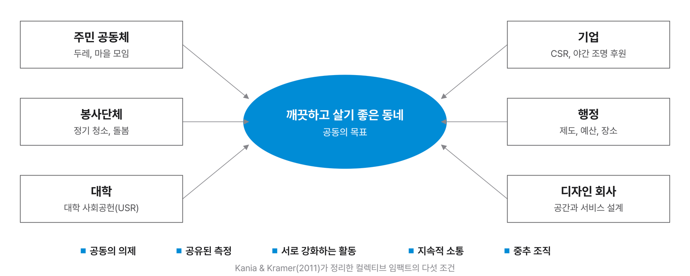
컬렉티브 임팩트
이 수업에서 ‘임팩트’는 사회에 좋은 영향을 주는 소셜 임팩트를 뜻합니다. 컬렉티브 임팩트(Collective Impact)는 여러 주체가 집합적으로 하나의 목표에 영향을 주는 모델입니다. 지금 마을 하나를 디자인할 때는 보통 행정과 이윤을 내는 디자인 회사 한두 곳이 참여하지만, 참여 주체가 다양해질수록 효과는 커집니다.
봉사단체가 와서 함께해도 좋고, 대학이 사회공헌(USR)으로 참여해도 좋고, 기업이 브랜드 홍보를 위해 야간 조명을 후원해도 좋고, 옆 동네 사람들이 두레처럼 와서 도와도 좋습니다. 깨끗한 동네라는 목표는 같지만, 한 주체가 깨끗하게 만들어 주는 것보다 여럿이 십시일반 힘을 보탤 때 그들 사이에 관계가 생기고 네트워크의 장점이 함께 만들어집니다. 사악한 문제를 푸는 한 가지 방법입니다.
독일 함부르크의 파인딩 플레이시스는 주민들이 디지털 도시 모형 위에서 직접 동네의 부지를 찾고 함께 검토한 사례로, 시민이 문제 해결의 주체가 되는 방식을 보여 줍니다. 국내에서도 카카오, SK 같은 기업이 해마다 사회문제 해결 프로그램을 운영하고 있습니다.
지역에서 진화하는 거버넌스
Local Governance in Transition
국내 지방정부의 공공디자인 행정에서도 네트워크, 협력적, 메타 거버넌스로 이어지는 흐름이 보입니다. 개정판 강의 슬라이드는 세 도시를 예로 듭니다.
서울
서울은 네트워크 거버넌스에서 협력적 거버넌스, 메타 거버넌스로 이어지는 발전형 구조를 보여 줍니다. 기후, 복지, 문화 정책에서 다층적인 협력 구조가 자리 잡았고, 사회문제해결디자인, 시민정책네트워크, 탄소중립 2050 같은 사업이 그 예입니다.
아산
아산시 공공디자인 진흥계획은 ‘협력적 거버넌스 실험도시’로 나아가고 있습니다. Level Zero, 100세마당, 모두의 쉼터 같은 사업은 공공디자인과 복지 정책을 통합한 모델로, 시민참여형 거버넌스에서 점차 메타 거버넌스 구조로 넓어지는 중입니다.
인천
인천은 ‘실험실 네트워크 거버넌스’를 추진하고 있습니다. 공공디자인 실험실을 통해 도시, 환경, 문화 부문 사이의 협력 플랫폼을 만들고 있으며, 앞으로 실험 결과를 통합하고 관리하는 메타 거버넌스 수준의 제도 설계가 필요하다는 과제를 안고 있습니다.
문제 유형별 거버넌스 경로
Matching Problems and Modes
거버넌스는 하나를 고르는 것이 아니라 문제의 성격에 따라 단계를 옮겨 가며 섞는 것입니다. 문헌분석에서 정리한 사회문제 유형별 경로를 학습용으로 간추렸습니다.
| 문제 유형 | 문제의 특성 | 알맞은 거버넌스 경로 | 그렇게 보는 이유 |
|---|---|---|---|
| 환경 기후위기, 수질, 대기 | 원인과 영향이 복잡하고 여러 층에 걸쳐 있으며 이해당사자가 서로 의존합니다 | 네트워크 → 협력적 → 메타 | 시민과 지역 공동체의 실천이 중요하고, 정부는 조정자 역할을 맡습니다 |
| 복지 노인, 청년, 장애인 | 이해당사자가 다양하고 성과를 지역과 개인 수준에서 체감합니다 | 협력적 → 네트워크 → 메타 | 공공, 민간, 비영리, 지역 공동체가 협업하고 부처와 기관을 통합해야 합니다 |
| 도시재생 쇠퇴 지역, 상권 회복 | 지역에 기반하며 주민, 공공, 전문가 사이의 조정이 필요합니다 | 협력적 → 네트워크 | 물리적 사업과 관계망 재생을 함께 해야 하고 중간지원조직의 역할이 큽니다 |
| 재난 관리 감염병, 지진, 홍수 | 고도로 시급하며 초기에는 위계적 통제가 필요합니다 | 계층제 → 네트워크 → 메타 | 초기 대응은 명령형, 중장기 복구는 협력과 네트워크, 전체 통합에는 메타 거버넌스가 필요합니다 |
| 경제, 산업 산업 전환, 일자리, 창업 | 정책 효과가 시장과 밀접하고 혁신 네트워크가 중심입니다 | 좋은 → 네트워크 | 투명한 규제 개혁과 기업, 대학, 정부 사이의 협업 생태계가 중요합니다 |
| 문화, 교육 학교 혁신, 지역문화 | 참여와 공감이 핵심이며 시민 참여의 수준이 높습니다 | 협력적 → 메타 | 기관과 학교, 지역사회가 공통의 비전을 세우는 학습형 네트워크가 필요합니다 |
경로를 읽는 법
화살표는 문제가 진행되면서 필요한 거버넌스가 바뀌는 방향을 뜻합니다. 같은 홍수라도 첫날과 1년 뒤에 필요한 거버넌스는 다릅니다. 공공디자인 프로젝트에서도 기획 단계, 실행 단계, 운영 단계마다 알맞은 조정 방식이 다를 수 있습니다.
근미래의 과제
Questions for the Near Future
강의는 두 개의 질문을 남기며 마무리됩니다. 둘 다 정답이 정해지지 않은, 앞으로 이 수업에서 함께 풀어 갈 질문입니다.
자기조직적 거버넌스를 위해
수평적이고 자율적인 자기조직적 거버넌스를 위해 필요한 전략은 무엇일까요. 인위적인 개입보다 주체의 역량과 서로의 신뢰를 바탕으로 한 자율적 관계입니다. 시민, 디자이너, 기업, 정부 가운데 공공디자이너의 역할은 무엇일까요.
민관 소통 체계
일방적인 거버넌스 체계에서 벗어난 민관의 소통 체계는 어떻게 운영될 수 있을까요. 정보 제공 위주의 일방적인 소통은 피드백 이후 또 다른 문제를 낳을 수 있습니다. 시민의 삶에 직간접적인 이해관계가 있는 사람들의 참여를 이끌어 내는 거버넌스가 필요합니다.
몰라서 어려운 것
거버넌스가 어렵게 느껴지는 것은 난해해서가 아니라 아직 익숙하지 않기 때문입니다. 공부는 알수록 모르는 것이 많아집니다. 혼란의 시기를 일찍 겪고, 참고문헌을 두껍게 쌓아 세상을 보는 폭을 넓히기를 바랍니다.
Reference / Glossary & Reading
참고
용어와 문헌
핵심 용어
이 자료에서 쓴 주요 용어를 영어와 함께 정리했습니다. 거버넌스 문헌을 읽을 때 길잡이로 쓰세요.
- 거버넌스
- Governance사회문제를 해결하기 위해 여러 주체가 참여하고 조정하는 방식. 협의로는 참여 체계, 광의로는 문제 해결 과정 전체를 뜻합니다.
- 정부, 통치
- Government위계적인 명령과 통제로 사회를 다스리는 체계와 그 기구.
- 사회적 조정
- Social coordination서로 다른 이해와 요구를 가진 사람들 사이에서 함께 받아들일 수 있는 길을 찾는 일.
- 계층제 거버넌스
- Hierarchical governance단일한 권력 중추가 계층적 지시로 사회를 조정하는 방식.
- 좋은 거버넌스
- Good governance위계를 유지하되 유능하고 투명하며 책임 있는 정부를 강조하는 방식.
- 네트워크 거버넌스
- Network governance계층제적 통제 없이 신뢰와 공유된 목적으로 구성원 스스로 문제를 푸는 방식.
- 협력적 거버넌스
- Collaborative governance위계와 네트워크 등 사회적 조정 양식을 알맞게 섞어 함께 문제를 푸는 방식.
- 메타 거버넌스
- Meta-governance여러 조정 양식을 고르고 섞고 관리하는 상위의 조정, 곧 거버넌스의 거버넌스.
- 사악한 문제
- Wicked problem정의 자체가 이해관계자마다 달라 깔끔한 정답이 없는 문제.
- 방향 잡기 / 노 젓기
- Steering / Rowing정부가 직접 서비스를 제공하기보다 방향을 정하고 조건을 만드는 역할로 바뀌어야 한다는 비유.
- 컬렉티브 임팩트
- Collective impact여러 주체가 공동의 의제 아래 힘을 모아 사회에 영향을 주는 모델.
- 디자인적 관리, 스튜어드십
- Stewardship맡은 자원과 공동체를 오래 돌보는 태도와 실천. 5강의 핵심 개념입니다.
추가 문헌
거버넌스 이론
- 이명석 (2017). 『거버넌스 신드롬』. 이 자료의 다섯 단계 구성의 기준 문헌입니다.
- Newman, J. (2001). Modernising Governance: New Labour, Policy and Society. Sage.
- Rhodes, R. A. W. (1996). The New Governance: Governing without Government. Political Studies, 44(4), 652–667.
- Stoker, G. (1998). Governance as Theory: Five Propositions. International Social Science Journal, 50(155), 17–28.
- Peters, B. G., & Pierre, J. (1998). Governance without Government? Rethinking Public Administration. Journal of Public Administration Research and Theory, 8(2), 223–243.
- Rosenau, J. N., & Czempiel, E.-O. (Eds.) (1992). Governance without Government: Order and Change in World Politics. Cambridge University Press.
정부의 역할과 협력
- Deutsch, K. W. (1963). The Nerves of Government. Free Press.
- Cleveland, H. (1972). The Future Executive. Harper & Row.
- Osborne, D., & Gaebler, T. (1992). Reinventing Government. Addison-Wesley.
- Ansell, C., & Gash, A. (2008). Collaborative Governance in Theory and Practice. Journal of Public Administration Research and Theory, 18(4), 543–571.
- Whitehead, M. (2003). ‘In the Shadow of Hierarchy’: Meta-governance, Policy Reform and Urban Regeneration in the West Midlands. Area, 35(1), 6–14.
공공디자인과 사회문제
- Rittel, H. W. J., & Webber, M. M. (1973). Dilemmas in a General Theory of Planning. Policy Sciences, 4(2), 155–169.
- Lynch, K. (1981). A Theory of Good City Form. MIT Press.
- Papanek, V. (1971). Design for the Real World. Pantheon Books.
- Kania, J., & Kramer, M. (2011). Collective Impact. Stanford Social Innovation Review, 9(1), 36–41.
- World Economic Forum (2018). Agile Governance: Reimagining Policy-making in the Fourth Industrial Revolution.
7강 강의 자료 Edited by 이현성_ 홍익대학교 공공디자인전공. 2026.